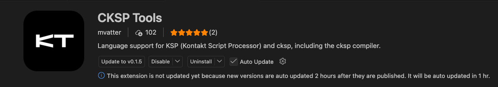
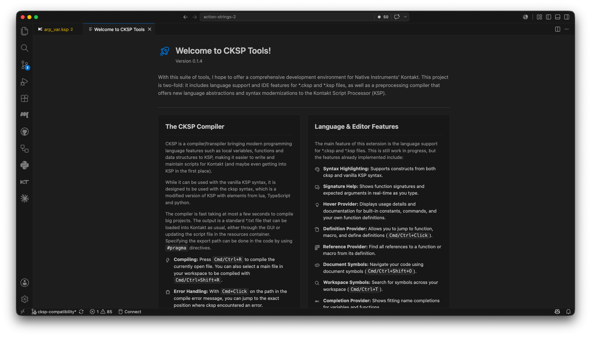
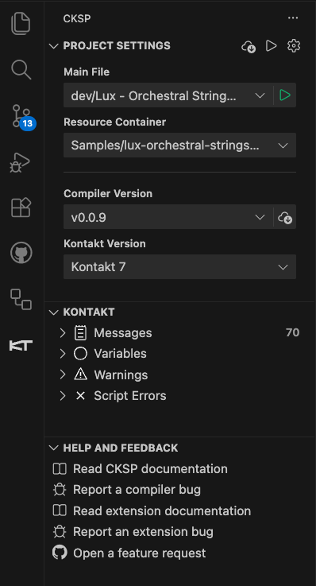

Setup and Compiler Integration
CKSP Tools manages the project settings and CKSP compiler versions required to build a Kontakt instrument. Each workspace can select its own main file, resource container, compiler, and Kontakt version.

Install CKSP Tools
- Open the VS Code Extensions view with Cmd+Shift+X on macOS or Ctrl+Shift+X on Windows/Linux.
- Search for
CKSP Tools. - Install the extension published by
mvatter.
- Download a
.vsixfile from the CKSP Tools releases. - Open the menu in the VS Code Extensions view.
- Choose Install from VSIX... and select the downloaded file.
- Restart VS Code if the extension does not reload after a manual reinstall.
Open in the Marketplace All installation options
CKSP Tools requires VS Code 1.87.0 or newer.
First launch

The extension activates when you open a *.cksp or *.ksp file or use one of its views. On the first launch it normally opens:
- a Welcome Page with a short introduction
- the CKSP Release Panel for downloading and managing compiler versions
After an extension update, a changelog webview may present the most important changes in the installed version.
Create a Kontakt project
Open the CKSP Sidebar and choose New Project, or run CKSP: Initialize Kontakt Project from the Command Palette.
The initializer asks for:
- a project name
- a Kontakt version
- a CKSP compiler version
 It then creates a conventional project structure:
It then creates a conventional project structure:
A resource-container placeholder is created at Samples/<ProjectName>.nkr. CKSP Tools also uses a temporary Lua script to start Kontakt and create an instrument with a linked resource script. The generated main.cksp writes to:
The entry point already contains the corresponding #pragma output_path(...).
Kontakt version
Automated project initialization supports Kontakt 7 and newer. The Kontakt version selected during setup becomes the workspace default.
Project Settings in the CKSP Sidebar
The CKSP Sidebar appears as a dedicated Activity Bar entry. Its Project Settings view contains the four values that define the workspace:

| Project setting | Purpose |
|---|---|
| Main File | Entry point used by Compile Main File |
| Resource Container | The project's .nkr file and resource context |
| Compiler Version | CKSP compiler used by this workspace |
| Kontakt Version | Default Kontakt installation for the workspace |
Selections are stored in VS Code workspace settings, so different projects can use different compiler and Kontakt versions. If a required value is missing, CKSP Tools prompts for it when the related command runs.
Compile scripts
Compile Current File
Compile Current File builds the active CKSP/KSP file. Default shortcut on macOS, Windows, and Linux: Shift+Alt+R The command is also available in the editor context menu and the editor run action.
Compile Main File
Compile Main File builds the entry point selected under Main File.
Shift+Cmd+R
Shift+Ctrl+R
You can also use the play button next to Main File in the CKSP Sidebar.
Before a build starts, CKSP Tools saves all open files. The selected compiler then runs in a VS Code terminal named cksp.
Navigate compiler errors
When the compiler prints an error containing a file path and source position, VS Code exposes it as a terminal link. Use Cmd+Left Button on macOS or Ctrl+Left Button on Windows/Linux to jump to the affected location.
Control the output path
The recommended workflow writes generated KSP directly into the Kontakt resource-script folder:
The path is resolved by the compiler and lets Kontakt load or update the output where it expects a resource script.
Keep the output declaration in the entry point
A project initialized by CKSP Tools already includes this pragma in main.cksp. Existing projects should add it to the file selected as Main File.
Manage compiler versions
Use the download/release action next to Compiler Version to open the CKSP Release Panel.
 The panel can:
The panel can:
- list available compiler versions
- download, delete, or reinstall a version
- display release changelogs
- show or hide pre-releases
Compiler binaries are stored in VS Code global storage, preventing unnecessary downloads after an extension update. Old releases can be cleaned up automatically with:
| Setting | Purpose |
|---|---|
cksp.autoCleanupCompilers |
Remove older locally stored compilers automatically |
cksp.maxStoredCompilerVersions |
Maximum number of compiler versions kept locally |
If a workspace selects a compiler that is not installed locally, CKSP Tools asks for an available version when you compile.
Common workflows
Start a new project
- Open an empty project folder in VS Code.
- Open the CKSP Sidebar and choose New Project.
- Enter the project name and select Kontakt and compiler versions.
- Wait for the project structure, resource container, main file, and instrument to be created.
- Edit
main.cksp. - Compile the main file with Shift+Cmd+R on macOS or Shift+Ctrl+R on Windows/Linux.
- Inspect runtime messages in the Kontakt Log.
Configure an existing CKSP or KSP project
- Open the project folder in VS Code.
- Open a
*.ckspor*.kspfile. - Select the Main File in the CKSP Sidebar.
- Select the
.nkrResource Container, if the project has one. - Choose compiler and Kontakt versions.
- Add
#pragma output_path(...)to the main file when needed. - Compile the project.
Switch compiler versions
- Open the Release Panel from the compiler action in Project Settings.
- Download the required version.
- Select it under Compiler Version.
- Compile again.
Next steps
-
Use editor intelligence
Learn completion, hover, navigation, inlay hints, and supported file types.
-
Run and debug in Kontakt
Start Kontakt, inspect logs, and map script messages back to source files.